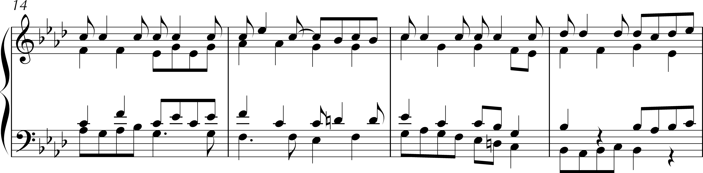
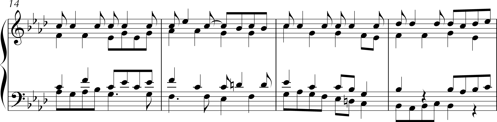

Whose is this Fugue?
The subject of the fugue consists of the first four bars of the Üsküdar theme, a folk tune ubiquitous in the Balkan region. Adela Peeva investigates the tune’s origin and cultural significance in her documentary Whose is this Song? (2003)
The essential attribute of the fugue form is the manner in which each voice gives its own statement of the subject while the other voices complement it. This seemed to me as apt a metaphor for the evolution of folklore as any.